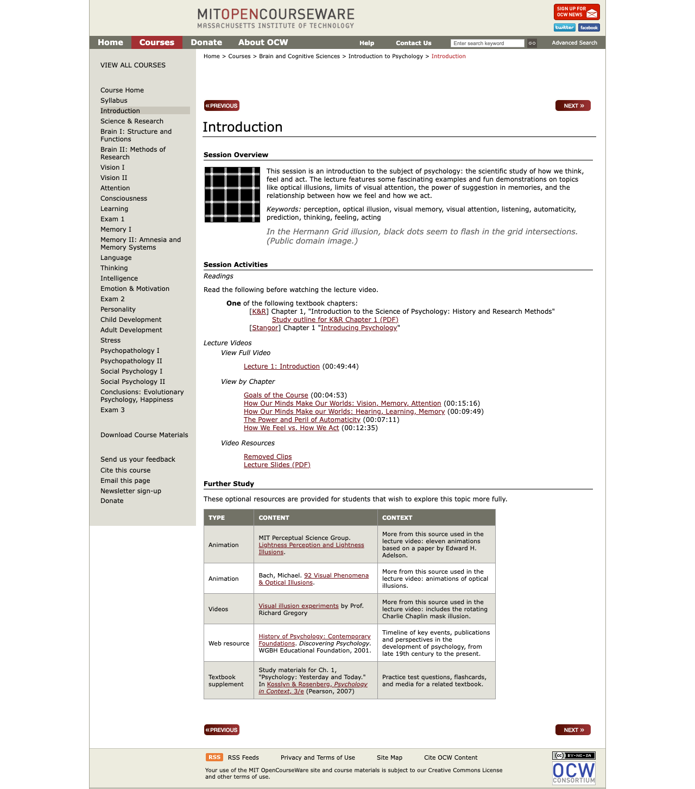
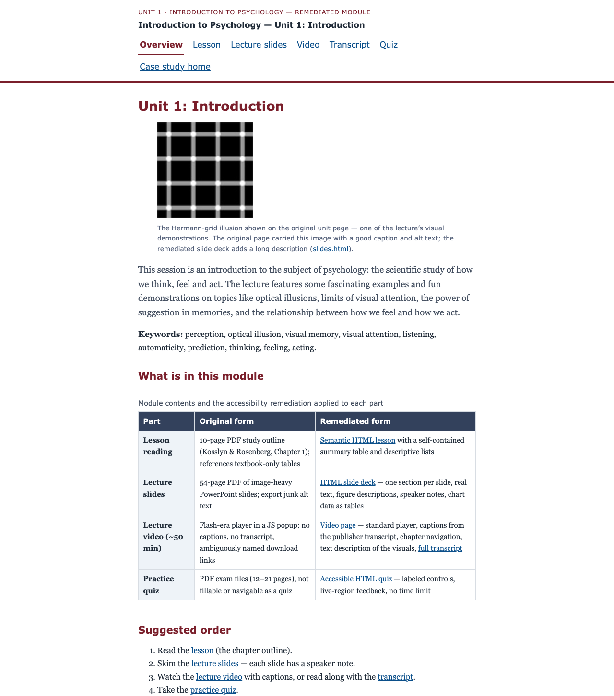

Remediating a real course module to WCAG 2.1 AA
A real, openly licensed university course unit was audited against WCAG 2.1 AA with automated and manual methods, rebuilt as accessible HTML, and documented with a criterion-by-criterion conformance report, before/after evidence, a catalog-scale prioritization model, and a faculty prevention guide. Prepared as the pilot for Lakeside State University, a fictional US public university preparing for ADA Title II digital accessibility compliance.
Evaluation status. Automated accessibility testing and agent-based design reviews are complete. AI-simulated learner and review-panel evaluations are pending. No real learners have tested this yet. See evaluation/METHODS.
Before and after
h1,
and the page topic “Introduction” is not a heading at all), an unlabeled
search field, a skip link keyboard users cannot reach, and a video behind a
Flash-era popup with no captions or transcript.
h1, a keyboard-reachable skip link, a labeled navigation, a
readable palette, and every content type rebuilt accessibly (screenshots and
raw tool exports in audit/).
The module
The subject is Unit 1 (“Introduction”) of 9.00SC Introduction to Psychology, Fall 2011 by Prof. John Gabrieli, published by MIT OpenCourseWare under CC BY-NC-SA 3.0 US (license verified on the retrieved page; see attribution). One week of real content in every format the plan calls for:
- course home, unit session page, and exam page (2011–2012 HTML, preserved
from Internet Archive captures in
docs/before/) - a 54-page lecture-slide PDF and a 10-page study-outline PDF
- a ~50-minute lecture video (linked, not copied — it stays at the publisher) with a publisher transcript available
- a data chart in the slides and a practice exam with solutions as the quiz
The problems are real — nothing here was staged: the original page’s video is a Flash-era popup with no captions and no transcript; the slide PDF’s figure alt text is export junk (“Text Box:”, “scan569.jpg”); the exam PDF’s brain diagram has no text alternative; and the fixed-width layout cannot reflow to a 320 px screen.
Findings
33 issues logged across the original module (issue-log.csv, issue-log.md):
| Severity | Count | Examples | Caught by |
|---|---|---|---|
| Critical | 3 | No captions for the lecture video; no audio description for an inherently visual lecture; unlabeled search field on every page | Scripted media check; markup inspection; axe (label) |
| High | 11 | Page topic not a heading; site logo is the only h1; unreachable skip link; fixed-width layout fails 320 px reflow; slide figures with junk alt; exam diagram with no text alternative | DOM inspection; scripted reflow; PDF tag-tree inspection |
| Medium | 13 | No landmarks; heading-order skips; identical download-link names; popup opens without moving focus; undersized touch targets (WCAG 2.2 best practice) | axe; pa11y; Lighthouse; scripted keyboard tests |
| Low | 6 | Typo’d hhttp:// link; deprecated table summary; white-on-white image-replacement text | Scripted link inventory; contrast measurement |
Automated tool results, before: axe-core 4.11.1 found
13 violations across the three pages (3 critical, 1 serious, 9 moderate);
Lighthouse 13.0.1 scored accessibility 77 / 81 / 79 with 24–35 undersized
touch targets per page; pa11y 9.0.0 added broken in-page anchors
(href="#?w=535") and the unlabeled search field. Automated tools
caught only part of the picture — most logged issues (captions, heading
meaning, link purpose, PDF structure) required the scripted manual pass and
file inspection. Raw exports: audit/automated-results/.
Fixes
| Content type | Original | Remediated | Issues fixed |
|---|---|---|---|
| Video | Flash-era popup, no captions, no transcript, identically-named download links | Video page: standard <video> with a captions track built from the publisher’s official transcript, chapter buttons, text description of the visuals, and a full transcript | I-01–I-09 |
| Slides | 54-page image-heavy PDF, junk alt text, chart data invisible to text readers | HTML deck: one section per slide, real text, figure descriptions, speaker notes, and chart data as tables | I-24–I-26 |
| Reading | 10-page PDF; references textbook-only tables | Semantic HTML lesson with a self-contained summary table built from the outline’s own text | I-27, I-28, I-31 |
| Quiz | PDF exams, not fillable or navigable as a quiz | Accessible quiz: fieldset/legend, labels, arrow-key radio groups, live-region feedback, no time limit | I-30 |
| Page structure | No landmarks; logo-h1; unreachable skip link; unlabeled search; fixed width | Landmarks, one content h1 per page, working skip link, labeled controls, fluid layout with a tested palette (every pair ≥ 4.5:1) | I-10–I-23 |
Evidence — and what it can and cannot show
What was measured
- Automated audits of every original page and every remediated page (axe,
Lighthouse, pa11y; exports in
audit/automated-results/). After: 0 axe violations (0 critical/serious) on all remediated pages and on this case study site itself. - Scripted keyboard tests, 11 of 11 passing
(
audit/manual-evidence/after/keyboard-tests.json): skip link works, radio groups operate with arrow keys, quiz feedback is announced in a live region, video chapter buttons seek the player, no keyboard traps. - Reflow at 320 px (the 400%-zoom reference): original unit/exam pages render a 952 px-wide document (fail); every remediated page fits without horizontal scrolling.
- Measured color contrast: every palette pair in the remediated module ≥ 4.5:1
(ratios documented in
docs/module/css/module.css). - PDF tag-tree inspection: all six original PDFs are tagged, but slides carry junk alt text and the exam diagrams have none — checked, not assumed.
What this evidence cannot show
- No screen-reader testing has been done. VoiceOver
automation (Guidepup) does not function on macOS 27, and aria snapshots
are not a substitute for a real screen reader. A step-by-step human VoiceOver
protocol (rotor checks before/after) is provided at
evaluation/human-protocol/voiceover-protocol.mdand remains pending. - No review by a daily assistive-technology user. This is the
strongest missing evidence; a paid-review invitation template is in
evaluation/human-protocol/at-user-review-invite.md. - Caption accuracy against the audio is pending. Caption
text is the publisher’s official transcript; cue timings were
machine-aligned. The speech-to-text word-error-rate check runs via
npm run eval:pendingonce API keys are configured — until then the conformance report lists it as pending, and nothing is marked “fixed” on that evidence alone. - No conformance certification. The conformance report covers every WCAG 2.1 A/AA criterion with honest statuses, but it is explicitly not an official VPAT, and no “WCAG certified” claim is made anywhere.
- No learning outcomes. Nothing here shows that students learn more from the remediated module — only that the content is accessible.
Methods, labels, and authorship
All methods, tools, versions, and dates are documented in audit/methodology.md and evaluation/METHODS. Every automated or scripted result is labeled as agent-produced. The site, the remediated module, the caption timing alignment, and the written materials were produced with AI assistance as part of a portfolio build; the underlying course content is MIT OpenCourseWare’s, and every claim above is reproducible from the repository.
Demo video (scripted keyboard navigation)
What this video is: a scripted keyboard navigation demo of the remediated module, recorded automatically. It is not a screen reader demonstration — VoiceOver automation is unavailable on macOS 27 (see limitations), and no screen reader results are claimed anywhere in this repository. The captions and the transcript describe the scripted steps.
Scaling to 300 courses
One module proves the craft; the program view makes it survivable at catalog scale:
- Prioritization model — Impact × Exposure ÷ Effort scoring with 10 fictional Lakeside State courses ranked; effort estimates cite published human benchmarks (4–5 hours of caption correction per video hour — 3Play Media; up to ~1 hour per complex PDF page — WebAIM/Equidox; all accessed 2026-10-25), never AI-agent time.
- Remediation workflow — intake → snapshot → audit → triage → fix → verify → human pass → faculty sign-off → monitor (Mermaid diagram + text).
- Faculty quick guide — the 10 rules that stop new problems: real headings, meaningful links, alt text, no color-only meaning, slide templates, corrected captions, HTML over PDF, simple tables, contrast, and the built-in checkers.
Regulatory anchor, verified 2026-10-25: the DOJ’s ADA Title II rule requires WCAG 2.1 AA for state and local government web content and mobile apps; the deadline for large covered public entities, originally April 24, 2026, was extended on April 20, 2026 to April 26, 2027, with requirements unchanged and limited exceptions (including archived web content). Sources: Purdue Innovative Learning, CSU Stanislaus.
License and attribution
- Source module: 9.00SC Introduction to Psychology, Fall 2011, Unit 1, Prof. John Gabrieli, MIT OpenCourseWare — CC BY-NC-SA 3.0 US, verified on the retrieved page (see ATTRIBUTION.md for every adaptation and third-party item).
- This repository’s learning content is licensed alike (CC BY-NC-SA, see
LICENSE); all code is MIT (LICENSE-CODE). - “Lakeside State University” is fictional and labeled as such on every page; the audited module is real.
Repository documents
- Conformance report — every WCAG 2.1 A/AA criterion, before → after (not an official VPAT)
- Before/after evidence — tool scores, issue counts, screenshot pairs
- Executive summary — one page for a dean or director
- Audit methodology — scope, tools, dates, who did what
- Decision log and evaluation methods